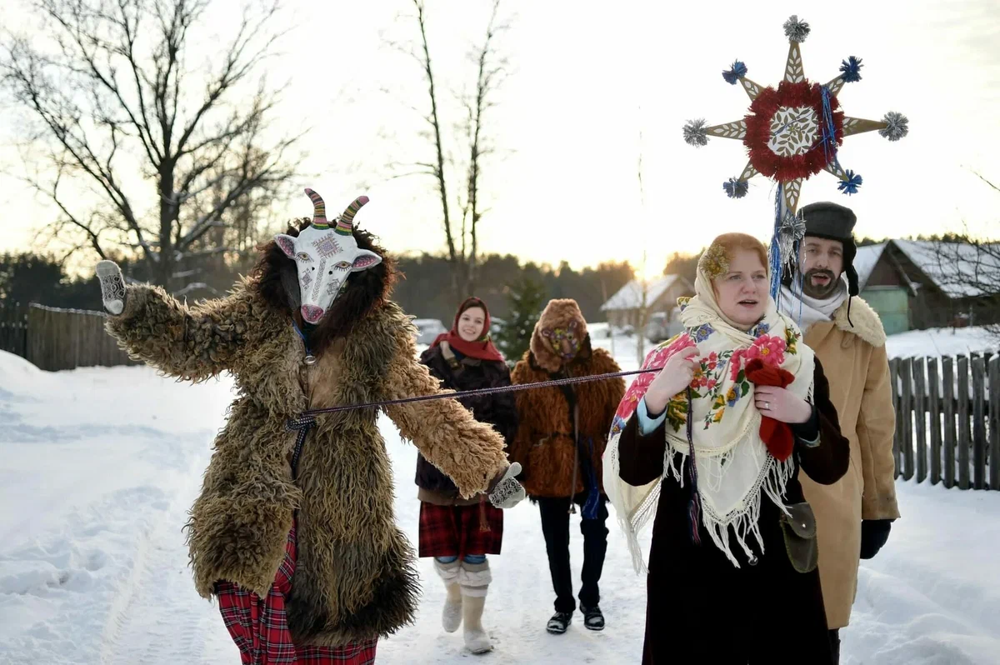

Новый Год
Новый Год
Новый Год
Новый Год
Для большинства россиян Новый год — любимое календарное событие. В новогоднюю ночь даже скептики немного верят в чудо и соблюдают ритуалы. За привычными праздничными атрибутами, объединяющими поколения, — сверкающей ёлкой, загадыванием желаний под бой курантов и письмами к Деду Морозу — скрывается многовековая история Нового года в России.


Прежде чем праздник обосновался в зимней ночи, его дата несколько раз менялась. Логика изменений следовала то природным, то государственным циклам. Как праздновали Новый год на Руси:

1. Древние славяне отмечали праздник зимнего солнцеворота — Коляду. Переходный период символизировал поворот солнца на весну. Это было время гаданий, ряжения и обильных застолий. Многие самые древние обрядовые практики Нового года связаны с подчёркнутой избыточностью. Обилие (веселья, кушаний, встреч, игр, песен и так далее) осознавалось как «магия первого дня»: каким будет первый день, таким будет и весь год. Разнообразная еда символизировала необъятность мира и предназначалась для распределения между всеми участниками ритуала. В самую длинную ночь ряженым, приходящим в дом, дарили съедобные подарки: пироги, блины, пряники и другую выпечку. В обрядовый хлеб вкладывали всего понемногу: все продукты, которые употребляются в доме.
2. С распространением христианства даты начали считать от сотворения мира. Долгое время Новый год праздновали 1 марта. По земледельческому календарю новолетие символизировало приход тёплого периода, пробуждение природных сил и старт полевых работ.
3. Позже на Никейском соборе начало года перенесли на 1 сентября, чтобы летоисчисление соответствовало византийской традиции. Поздневизантийский сценарий встречи Нового года прижился в Московском царстве XVI–XVII веков: в организации массовых шествий и служб участвовала не только церковь, но и государственные деятели.
4. Коренной перелом в истории празднования произошел в 1699 году. Царь-реформатор Петр I издал указ о начале отсчёта лет по европейской модели — от Рождества Христова с датой праздника Нового года 1 января. Документ детально регламентировал новые «латинские» обычаи: поздравлять друг друга с праздником, проводить массовые праздничные службы с залпами пушек и фейерверками, украшать сосновыми, еловыми и можжевеловыми ветками улицы и дома.